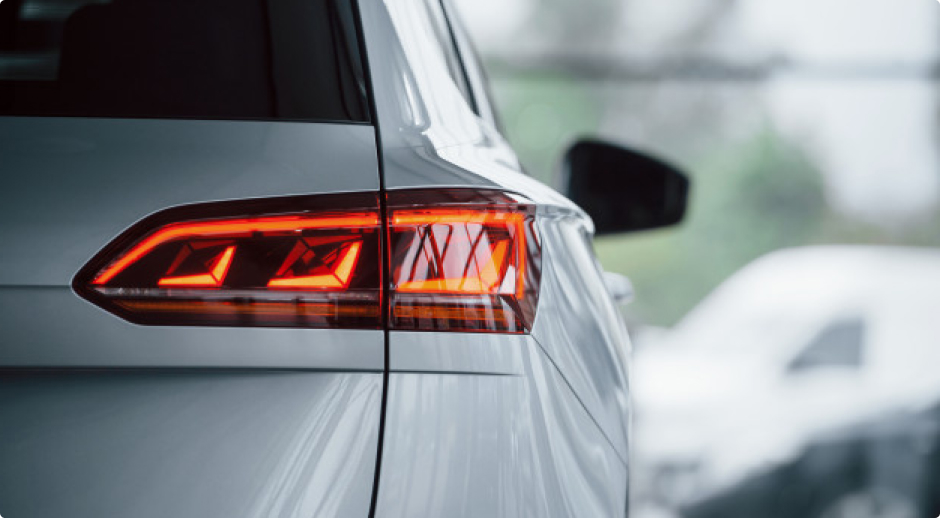

Как светят светодиодные лампы в рефлекторной оптике?
Первая коллекция бренда SoundSleep
Каждый раз, покупая какую-либо ценную вещь в дом, мы изучаем много различной информации и становимся профессионалами в этой области. Для того, чтобы вы не забивали голову ненужной информацией, я составил этот чек-лист.
Он поможет вам не упустить важные нюансы при покупке люстры, бра или настольной лампы. Не буду писать про очевидные и банальные вещи, такие как «люстра должна подходить по стилю», а заострю ваше внимание только на важных пунктах. Поехали!
Покупайте всю коллекцию сразу
Бывает такое, сначала купили люстру, а бра решили взять через год. Так вот, по возможности покупайте всё сразу. Иногда производители могут изменить оттенок цвета каркаса или абажура, размеры и декоративные элементы. В этом случае возможно несовпадение светильников. Не говоря уже о том, что необходимую вам модель через какое-то время могут просто вывести из производства.
Уточняйте высоту.
От головы самого высокого члена семьи до люстры должно быть минимум 30 см, а в идеале 40-50 см. Если у выбранной люстры высота «впритык», советуем подробнее узнать о ней. Некоторые производители указывают высоту люстры без учета цепи и потолочной чаши. А это плюс 15-20 см, которые могут стать критичными для вас.
Поинтересуйтесь о абажурах.
От головы самого высокого члена семьи до люстры должно быть минимум 30 см, а в идеале 40-50 см. Если у выбранной люстры высота «впритык», советуем подробнее узнать о ней. Некоторые производители указывают высоту люстры без учета цепи и потолочной чаши. А это плюс 15-20 см, которые могут стать критичными для вас.
Чем отличается этот бренд от других:
- Покупайте всю коллекцию сразу
- Мягкие объятья вместе с полотенцами SoundSleep
- Домашние новинки от Ellen, вдохновленные ранней весной
Первая коллекция бренда SoundSleep
- Покупайте всю коллекцию сразу
- Мягкие объятья вместе с полотенцами SoundSleep
- Домашние новинки от Ellen, вдохновленные ранней весной